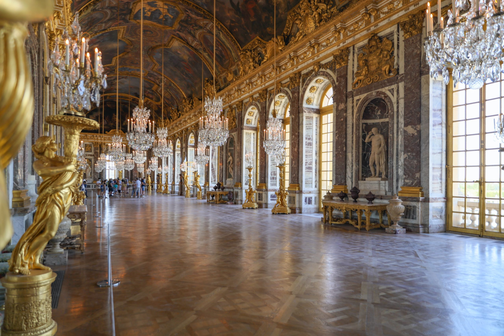
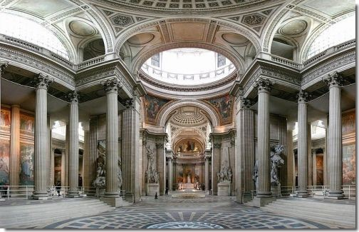
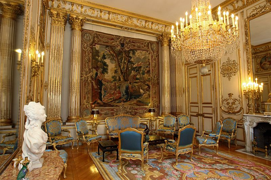
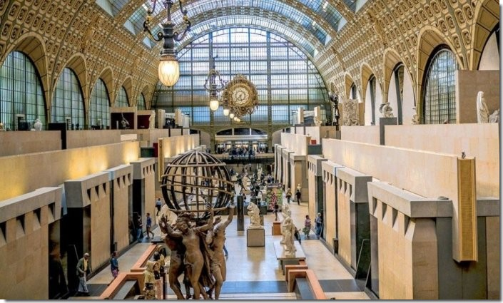

1. La Tour Eiffel

C'est quoi l'histoire de la tour Eiffel un jour une question ?
La Tour Eiffel est le monument le plus connu et représente le symbole de la France.
Cette tour haute de 312 mètres a été construite au cœur de Paris en seulement 2 ans pour la grande Exposition universelle de 1889.
Elle a été imaginée par deux collaborateurs du célèbre ingénieur Gustave Eiffel. Et c'est l'architecte de son équipe qui a choisi la forme définitive de la tour Eiffel.
2. Le musée du Louvre

C'est quoi l'histoire du Musée du Louvre ?
L'histoire du Louvre commence au Moyen Âge.
Sous le règne de Philippe Auguste (1165-1223), en 1190, craignant des invasions anglaises.
Le roi décide de faire construire une enceinte fortifiée autour de Paris et de protéger l'ouest de la cité par une forteresse, le Louvre, et au fil du temps cette enceinte est devenu un musée.
3. Le château de Versailles
 C'est quoi l'histoire du Château de Versailles ?
En 1789, la Révolution française contraint Louis XVI à quitter Versailles pour Paris.
Le Château ne sera plus jamais une résidence royale, et connaît au XIXe siècle une nouvelle destinée.
En 1837, il devient musée de l'Histoire de France, par la volonté du roi Louis‑Philippe, monté sur le trône en 1830.
4. Arc de Triomphe

C'est quoi l'histoire de l'Arc de Triomphe ?
L'Arc de triomphe de l'Etoile.
C'est Napoléon Ier, au lendemain de la bataille d'Austerlitz qui ordonne la construction de cet arc de triomphe à la gloire de la Grande Armée.
Débutés en 1806 sous la direction de l'architecte Jean-François-Thérèse Chalgrin, les travaux d'édification ne s'achèveront qu'en 1830.
5. Le Panthéon
 C'est quoi l'histoire du Panthéon ?
Édifié comme sanctuaire à la gloire de la patronne de Paris.
L'édifice connait un premier tournant dès la Révolution alors que l'église est à peine achevée.
Le bâtiment devient, suite à la disparition de Mirabeau en 1791, une nécropole nationale réservée au culte des hommes illustres.
6. La Cathédrale Notre-Dame Paris

C'est quoi la Cathédrale de Notre-Dame de Paris ?
La cathédrale Notre Dame de Paris.
La construction de Notre Dame de Paris a été engagée sous le règne de Louis VII par l'Évêque Maurice de Sully, évêque de Paris
En 1163, elle s'est étalée de 1163 à 1345...
Elle a été construite sur une ancienne église de Childebert et un temple d'Apollon datant du IVe siècle.
7. Palais de l'Élysée
 C'est quoi l'histoire du Palais de l'Élysée ?
Construit par l'architecte Armand-Claude Mollet en 1720 pour Louis-Henri de La Tour d'Auvergne, comte d'Évreux.
Le palais de l'Élysée a une histoire illustre : il est offert par Louis XV à sa favorite, la marquise de Pompadour.
En 1753, puis devient le palais princier de Joachim Murat, beau-frère de Napoléon Ier .
8. Musée d'Orsay
 C'est quoi l'histoire du Musée d'Orsay ?
En 1978, le bâtiment fut classé monument historique et l'établissement public du musée d'Orsay fut créé pour diriger la construction et la mise en œuvre du musée.
Le 1er décembre 1986, le Président de la République, François Mitterrand, inaugura le nouveau musée qui ouvrait ses portes au public le 9 décembre suivant.